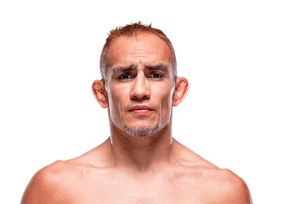

Tony Ferguson es uno de los peleadores más impredecibles y creativos en la historia de la división peso ligero de la UFC. Nació el 12 de febrero de 1984 en California, Estados Unidos.

Ferguson es conocido por su estilo único de pelea que combina golpes poco convencionales, presión constante y un jiu-jitsu extremadamente peligroso.
A lo largo de su carrera logró una impresionante racha de victorias en la división peso ligero, lo que lo llevó a ganar el campeonato interino de la UFC.
Su estilo agresivo, su resistencia física y su capacidad para atacar desde cualquier posición lo convirtieron en uno de los peleadores más temidos dentro de la categoría.
Peso ligero (155 lb / 70 kg)
Más de 20 victorias y una de las rachas de triunfos más largas en la historia del peso ligero.